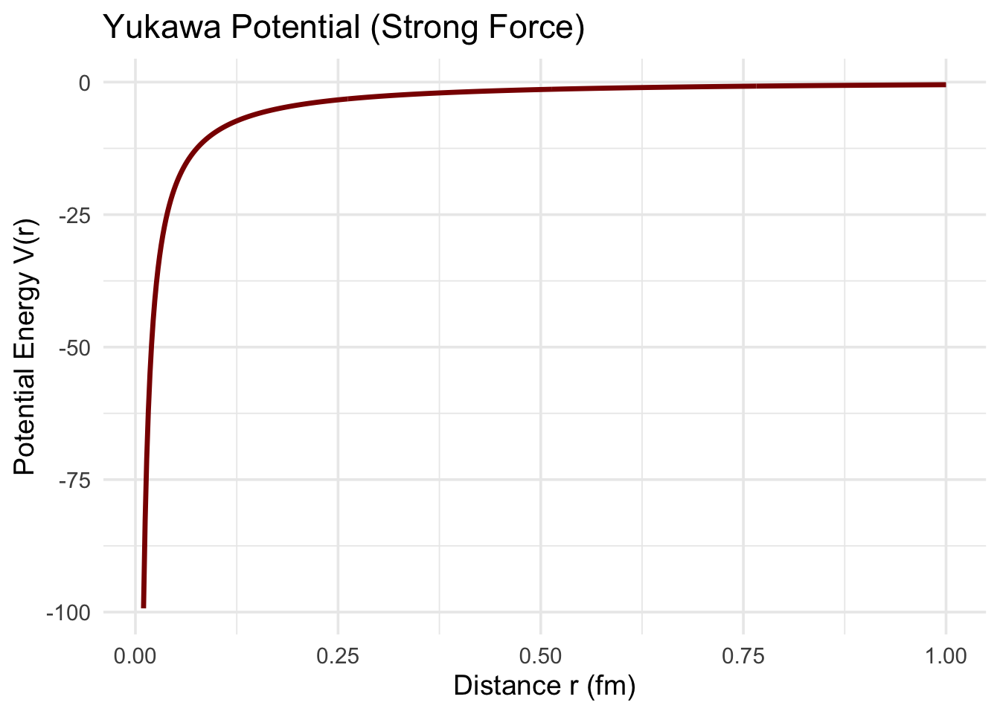
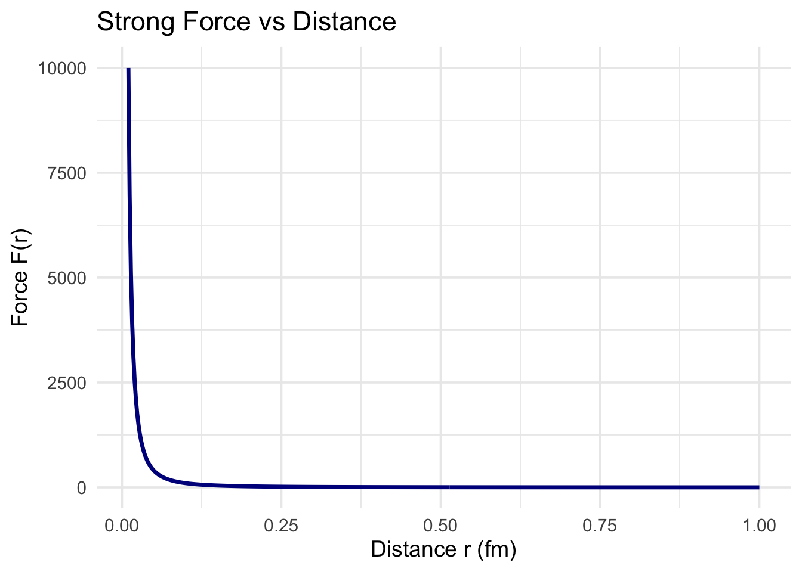
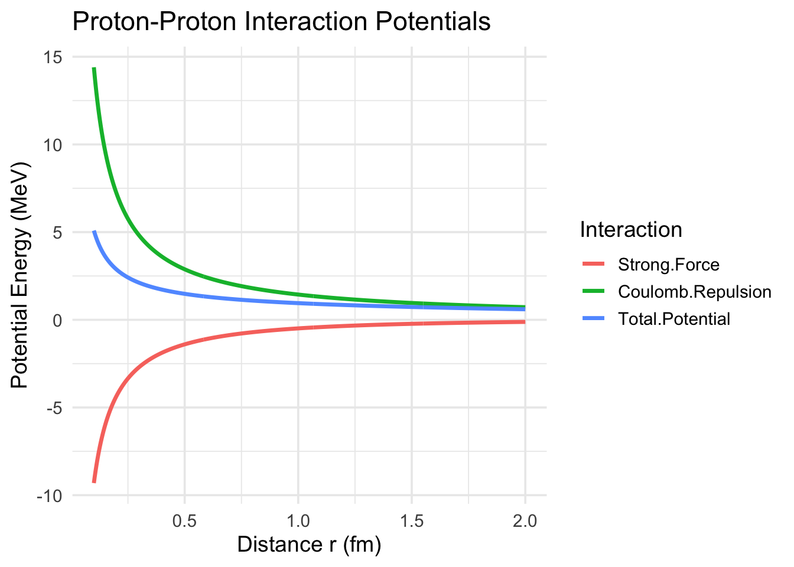

💥 Strong Force vs. Nuclear Force vs. Yukawa Potential — What’s the Difference?
If you’re learning about nuclear physics, chances are you’ve come across three seemingly similar terms: the strong force, the nuclear force, and the Yukawa potential. They all sound like they’re doing the same thing — holding atoms together — but they operate at different layers of the physical universe. Here’s how they relate and why they matter.
🔬 The Strong Force — One of Nature’s Four Pillars
The strong force (also called the strong interaction) is one of the four fundamental forces of nature, alongside gravity, electromagnetism, and the weak force.
This is the force that: - Binds quarks together to form protons and neutrons. - Keeps protons and neutrons bound inside the atomic nucleus.
It’s described by a theory called Quantum Chromodynamics (QCD), which uses particles called gluons to mediate the interaction between quarks.
🧠 Analogy: Think of the strong force as the glue that holds the bricks (quarks) together to build the walls (protons and neutrons) of the atomic structure.
🔗 The Nuclear Force — The Residual Strong Force
The nuclear force (or residual strong force) is what acts between whole protons and neutrons (collectively called nucleons).
Here’s the catch: protons and neutrons are made of quarks, which interact via the strong force. But this interaction “leaks out” beyond the boundaries of each nucleon, creating a residual force — the nuclear force — that binds nucleons together into stable nuclei.
📏 The nuclear force only acts at very short ranges (around 1 to 2 femtometers, or (10^{-15}) meters), which is why nuclear reactions require extremely close encounters.
🧠 Analogy: If the strong force is like the electrical bonding within molecules, the nuclear force is like van der Waals forces between those molecules — a residual effect with a big impact.
🧮 The Yukawa Potential — A Model of the Nuclear Force
In 1935, physicist Hideki Yukawa proposed a mathematical model of the nuclear force. His theory suggested the force was mediated by a new, short-lived particle — what we now know as the pion (π-meson).
He derived a formula to describe how the potential energy between two nucleons changes with distance:
[ V(r) = - e^{-r / r_0} ]
Where: - ( V(r) ) is the potential energy at distance ( r ) - ( g ) is a coupling constant (strength of interaction) - ( r_0 ) is the characteristic range of the force (about 1.4 fm) - The exponential term causes the force to drop off quickly with distance
The Yukawa potential gives us a simple, classical approximation of how nucleons interact. It was the first successful model of the nuclear force, and it earned Yukawa the Nobel Prize.
⚛️ Why It Matters
Understanding these forces is crucial for: - Explaining nuclear fusion and fission - Modeling atomic nuclei - Designing particle accelerators and nuclear reactors - Exploring the origins of matter in the early universe
While the full theory (QCD) is mathematically intense, the Yukawa potential gives us a beautifully simple way to model complex interactions — perfect for simulations, teaching, and exploring the basics of nuclear physics.
Here’s how you can model the strong nuclear force in R using the Yukawa potential;
✅ R Code: Yukawa Potential and Force
# Load librarylibrary(ggplot2)# Constantsg <-1# arbitrary coupling strengthr0 <-1.4# range of strong force in femtometers# Distance range (in femtometers)r <-seq(0.01, 1, length.out =500)# Yukawa potential (V) and force (F = -dV/dr)V <--g^2*exp(-r / r0) / rF <- g^2*exp(-r / r0) * (1+ r / r0) / r^2# Create data framedf <-data.frame(r = r, Potential = V, Force = F)# Plot potentialp1 <-ggplot(df, aes(x = r, y = Potential)) +geom_line(color ="darkred", linewidth =1.2) +labs(title ="Yukawa Potential (Strong Force)", x ="Distance r (fm)", y ="Potential Energy V(r)") +theme_minimal(base_size =14)# Plot forcep2 <-ggplot(df, aes(x = r, y = Force)) +geom_line(color ="darkblue", linewidth =1.2) +labs(title ="Strong Force vs Distance", x ="Distance r (fm)", y ="Force F(r)") +theme_minimal(base_size =14)# Print plotsp1

p2

Output Explanation:
The potential plot shows a sharp dip near ( r = 1 ) fm — strong attraction!
The force plot shows the force peaks at ~0.7–1.2 fm and rapidly decays after that.
# Load librarylibrary(ggplot2)# Constantsg <-1# Yukawa coupling (arbitrary units)r0 <-1.4# Range of strong force (fm)k_e <-1.44# Coulomb constant in MeV·fm (e² / (4πε₀) in nuclear units)Z1 <-1# Charge of proton 1Z2 <-1# Charge of proton 2# Distance range in femtometers (avoid r = 0 to prevent division by zero)r <-seq(0.1, 2, length.out =500)# PotentialsV_strong <--g^2*exp(-r / r0) / rV_coulomb <- k_e * Z1 * Z2 / rV_total <- V_strong + V_coulomb# Create data framedf <-data.frame(r = r,`Strong Force`= V_strong,`Coulomb Repulsion`= V_coulomb,`Total Potential`= V_total)# Melt for ggplotlibrary(reshape2)df_melted <-melt(df, id.vars ="r", variable.name ="Type", value.name ="Potential")# Plot all potentials on the same graphggplot(df_melted, aes(x = r, y = Potential, color = Type)) +geom_line(size =1.2) +labs(title ="Proton-Proton Interaction Potentials",x ="Distance r (fm)",y ="Potential Energy (MeV)",color ="Interaction") +theme_minimal(base_size =14)
Warning: Using `size` aesthetic for lines was deprecated in ggplot2 3.4.0.
ℹ Please use `linewidth` instead.

Let’s break down the Yukawa + Coulomb Potential graph, especially in the context of two protons interacting (like in a fusion reaction).
🔍 What the Graph Shows:
The x-axis is: - Distance between the protons, in femtometers (fm).
( 1 = 10^{-15} ), about the size of a nucleus.
The y-axis is: - Potential energy (MeV) — the energy required to bring two protons to that separation.
🟥 Strong Force (Yukawa Potential)
Shown as: Red curve
Equation:
[ V_{}(r) = - e^{-r/r_0} ]
Attractive at short distances (under ~2 fm)
Short-ranged — drops off quickly beyond ~2–3 fm
Originates from meson exchange in quantum field theory
Pulls nucleons together inside the nucleus
🔵 Coulomb Repulsion
Shown as: Blue curve
Equation: [ V_{}(r) = ]
Repulsive between two like charges (protons)
Acts at all distances, strongest when the protons are close
Prevents them from getting near each other
⚫ Total Potential (Black Curve)
Sum of the two: [ V_{}(r) = V_{}(r) + V_{}(r) ]
Shape:
High repulsive barrier at medium distances (from Coulomb)
Then dips sharply negative at short range (strong force attraction)
Shows a potential well if you overcome the Coulomb barrier
⚠️ Why It Matters (Physics Insight)
In nuclear fusion, two protons must get close enough (≤ 1–2 fm) for the strong force to take over and bind them.
But the Coulomb barrier resists this — classically, they’d bounce off.
Quantum tunneling allows them to penetrate the barrier even if they don’t have enough energy classically — this is how fusion happens in the Sun!